MiBeeNvr
轻量级自托管 NVR（网络视频录像机）。单个静态二进制、零依赖、内嵌 Web UI，低功耗 ARM 设备即可运行。
- RTSP / ONVIF / GB28181 / 小米 / WHIP 摄像头接入，RTMP / SRT 推流
- WebRTC / HLS / FLV 直播与连续回放，音频与延时摄影
- S3 冷存储卸载、浏览器端 AI 检测
github.com/Mi-Bee-Studio
Mi&Bee Studio 是一支专注自托管基础设施、视频监控、物联网与开发板固件的工程团队。 每个项目遵循同一条原则：单二进制部署、零外部依赖、双语文档、开箱即用。
Product Matrix · Ecosystem
一张终端风格的动态图，看懂 34 个公开仓库如何环环相扣：
终端设备 → 协议库 → 平台服务。每条依赖边都经
go.mod / Cargo.toml 逐条核实，私有仓库一律不出现。

图里的光点会动 —— 与 GitHub 组织首页同款 ═▶ RTSP · ONVIF · GB28181 取流
Open Source Software
服务器上的一条命令，浏览器里的一个界面 —— 不多，也不少。
轻量级自托管 NVR（网络视频录像机）。单个静态二进制、零依赖、内嵌 Web UI，低功耗 ARM 设备即可运行。
设备管理与监控系统（CMDB-lite）。Go 后端（Chi + SQLite，CGO-free）内嵌 SvelteKit 5 SPA，单二进制部署。
全组织文档中心：所有项目双语（中 / 英）手册的单一事实源，branch-per-team 治理，squash-only 合并。
仓库 ↗ 在线阅读 www.mickeybee.cn/docs ↗MiBee 指纹库参考引擎：加载内嵌 YAML 规则（零配置），把采集到的证据分类为 ServiceIdentity，实现 MiBeeSteward 指纹规范。
github.com/Mi-Bee-Studio/mibee-fingerprints-go ↗MiBee Cam Family
把每一块 ESP32 变成正经的 IP 摄像机：MJPEG / RTSP 流、ONVIF、移动侦测、Web OTA，Prometheus 指标。
OV3660 300 万像素旗舰固件：MJPEG / RTSP（摘要认证）、ONVIF、人脸 / 移动 / 二维码 AI 检测并叠加实时画面、中英双语 Web UI。
仓库 ↗OV2640 / OV5640：MJPEG + RTSP 带 G.711 音频（摘要认证）、AVI 分段录像、NAS 自动上传（WebDAV / HTTP）、动态延时摄影。
仓库 ↗经典 OV2640 板卡：MJPEG 流、移动侦测、SD 时光流逝与连拍、ONVIF、双 WiFi 故障切换、文件管理器、Web OTA。
仓库 ↗无 PSRAM 单片方案（OV2640）：MJPEG 流、移动侦测、ONVIF、WebSocket 事件推送、Webhook 告警、AT 指令。
仓库 ↗Board-as-Root Firmware
一块板卡 = 一个仓库。每个仓库从 blink 基线开始，
统一内置 Web OTA 与 TWDT 看门狗，CI 自动构建固件、附双语文档。
不知道从哪块板开始？到 固件选型中心 tools.mickeybee.cn， 25 品牌 125 款开发板、430 款模块手册，还有协议库代码生成器。
About the Hive
「技术赋能生活，专业成就无忧」
Technology empowers life; professionalism brings peace of mind.
Mi 取自创始人网名 Mickeyzzc，Bee 来自他的爱人 —— 两只蜜蜂把家安在了代码里。 我们以全栈工程能力解决实际问题：软件开发、AI 应用、物联网、云原生、可观测性与系统集成。
除了公开仓库，蜂巢里还有一批私有维护的产品：运维工具链供应链中枢 MiBeeHive、 统一远程管理平台 MiBeeReach、边缘运维 Agent Kite 与统一设备交互协议 MDP。
觉得项目有用？去仓库点个 Star 🐝 —— 对蜜蜂最好的鼓励。